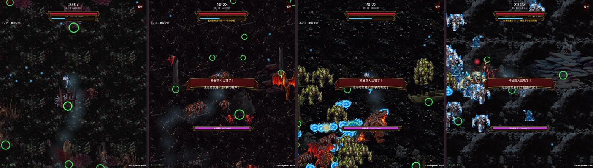
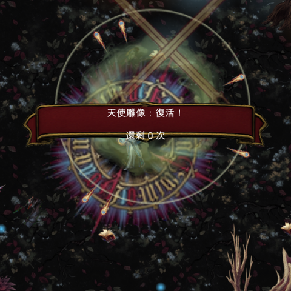

幽暗森林 · 血月荒原 · 深淵沼澤 · 冰雪絕地

血月荒原、深淵沼澤、冰雪絕地都接上了，加上先前的幽暗森林共四關。大蒜光環換成迷霧版並保留了傷害半徑的實邊。全部實機驗證過。

| 關卡 | 密度 | 裝飾物 | 有碰撞 | 穿越 |
|---|---|---|---|---|
| 1 幽暗森林 | 0.75 | 319 | 120 | 36 / 40 |
| 2 血月荒原 | 0.45 | 161 | 63 | 38 / 40 |
| 3 深淵沼澤 | 0.75 | 280 | 86 | 40 / 40 |
| 4 冰雪絕地 | 0.55 | 191 | 72 | 37 / 40 |
| 5 魔王城堡 | — | 還沒做（領域結界會拉遠鏡頭，密度與尺寸要重算） | ||
密度是跟關卡機制綁在一起的，不是美術偏好：荒原是獵殺者全程追殺、冰原是強制向東移動，兩關都需要更空曠的走位空間。

這一輪：迷霧光環影片 $0.32 ＋ 沼澤 3 張、冰原 2 張、荒原地面 1 張生圖，合計約 $1.5；場地與光環累計約 $4.3。沒有遇到 Grok 額度不足。